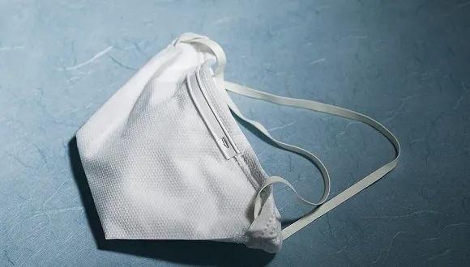

服装外贸行业等春来
原文链接 备份链接 本报记者 蒋政 北京报道 春节前订单延误波及整个产业链，春节后海外市场面临不确定性，疫情之下，服装外贸行业正受到阶段性影响。 “我们第一季度的订单，有80%几乎都没办法按时交货，金额差不多有一亿元。”作为福建省石狮市一 …

记者：金淼 编辑：许悦
“
有企业口罩还没生产出来，也想要出口。
”
根据美国约翰·霍布金斯大学数据显示，截至美国东部时间14日20时15分，全球累计确诊156102例。而全球范围内的疫情爆发，也带来世界范围内的口罩供应危机。
美国当地时间3月5日，美国贸易代表办公室公布了对美国中国3000亿美元加征关税商品A清单下产品公告，包含口罩、医用手套等医疗防护产品，排除类型均为完全排除。这也意味着，这些产品自排除生效之日起，1年内免加征7.5%的关税。
中国一直是口罩出口大国，而在国内新冠疫情率先爆发后，不少企业扩产、转产口罩生产。据赛柏蓝统计，在去年12月份暴发新冠疫情后，截至3月12日，有近20家药企新增口罩生产线，除此之外，中石化、富士康、上汽通用五菱，甚至童装品牌“小猪班纳”等企业也跨界转产口罩。
国家发改委消息称，2月29日，包括普通口罩、医用口罩、医用N95口罩在内，全国口罩日产能达到1.1亿只，日产量达到1.16亿只，分别是2月1日的5.2倍和12倍，进一步缓解了口罩供需矛盾。
企业扩产、转产由此也带来了国内市场产能供应过剩的情况。随着新冠疫情在全球范围内的发展，国内口罩生产企业也将目光放到全球范围内口罩紧缺国家的市场。
包括长荣股份、新纶科技在内的上市公司发布公告表示，公司将产能在满足国内需求后也将对外出口。
来自国内口罩重要产地湖北仙桃的口罩生产企业工作人员郭先生接受界面新闻采访时表示，在国内订单趋于平稳的情况下，进行询价的多是出口订单，而其中以意大利、西班牙等疫情较为严重地区询价的需求最为突出。
“国内国外两个市场感觉是分裂的，一方面国外需求爆发，一方面国内前期新增产能因为缺乏出口资质，出不去，国内开始降价。”郭先生表示，其所在工厂目前生产的订单仍然主要以政府订单为主，将少数余量进行出口。
虽然其所在的工厂口罩在此次疫情前就完成了欧盟CE认证，可以出口欧盟。但是郭先生表示出口订单一直以来只占到全部订单非常小的一部分，公司仍然缺少外贸易经验，而这也是大多数口罩企业共同面对的问题。
如果国内企业想要把口罩出口到欧盟，需要同第三方检测认证服务机构合作，由第三方检测机构将企业产品送检查、准备申报材料，将申报材料递交到CE认证机构。而近期口罩出口需求的增多也直接拉动了第三方检测认证服务的订单数量。
浙江温州一位第三方检测认证服务机构的的工作人员表示，从3月7日和8日起，公司平均每天收到四、五十个订单，“此前做认证的都是机械类产品，几乎没有做口罩认证的。”
而由于欧洲疫情原因，部分CE认证机构已经停止发证了，欧盟认证服务的价格也随之水涨船高，由原来的几千元涨至1万多。
但这些也没有阻挡国内企业想要出海的热情。“市场上现在还有涨到3、4万的，毕竟现在市场供求这么紧张。”而CE认证通常的时间需要7-15个工作日。
而该工作人员表示，老板已经通知，如果订单进一步增加，就需要暂停服务。“和我们合作的认证机构由于我们订单数量多，也已经开始暂停接我们的单了。”
不止口罩生产企业来询问出口认证的情况，该工作人员表示，近期也有温州当地的无纺布企业、服装生产企业来咨询口罩出口情况，“甚至有些企业，口罩都没生产出来，就过来咨询，来看看能不能做这块儿的生意。”
猛增的出口需求，也带来相应的风险。上述第三方认证行业工作人员表示，其在和生产企业沟通时，也会明确告知，CE证书的真实性可以保障，但是不能保证产品能够百分百出口，“具体也要看国内外海关的要求。”
另外，3月15日广东省医疗器械管理委员也发布了《广东省口罩等防控医疗器械产品投产建议及指引》，该文件中也明确，外销产品需获得各个地区的相关认证，认证时间周期较长，具有较大的市场风险，因此建议广大企业应在充分调研市场现状，并充分考虑生产环境、设备、原材料、人员、技术等因素后，全面审度自身条件，审慎投产。
未经授权 禁止转载

原文链接 备份链接 本报记者 蒋政 北京报道 春节前订单延误波及整个产业链，春节后海外市场面临不确定性，疫情之下，服装外贸行业正受到阶段性影响。 “我们第一季度的订单，有80%几乎都没办法按时交货，金额差不多有一亿元。”作为福建省石狮市一 …
原文链接 备份链接 从2万/吨到40万/吨，短短一个多月的时间，口罩“心脏”熔喷布价格已经上涨近20倍。分析认为，熔喷布产能和口罩产能阶段性不匹配是涨价主因 文 |《财经》记者 杨秀红 张建锋 王颖 陆玲 | 编辑 被称为口罩“心脏”的 …
原文链接 备份链接 图片来源：视觉中国 记者：昝慧昉 编辑：许悦 “ 眼下看来，在防疫物资序列中，产能充足、有能力供应海外市场的，可能是酒精消毒液类产品。 ” 随着新冠疫情在全球范围蔓延，防护、消杀等疫情防控物资的供应依旧紧张。据第一财 …
原文链接 备份链接 随着新冠肺炎疫情在全球蔓延，韩国和日本已经成为疫情高发地区。据韩国卫生部门消息，截至当地时间3月3日16时，韩国感染者总数升至5186人。日本形势同样不容乐观，截至当地时间3日下午六点半，已有985例确诊病例。当地疫情 …
原文链接 备份链接 上游产业链供应受阻、市场需求不足、现金流日益“吃紧”、防疫能力较弱、召回员工风险高等问题，使得中小微企业复工之路，显得困难重重。 记者 | 王晓珊 实习生 | 丁宁 编辑 | 盛倩玉 茅台镇一家酒企老板李磊，这几天愁 …